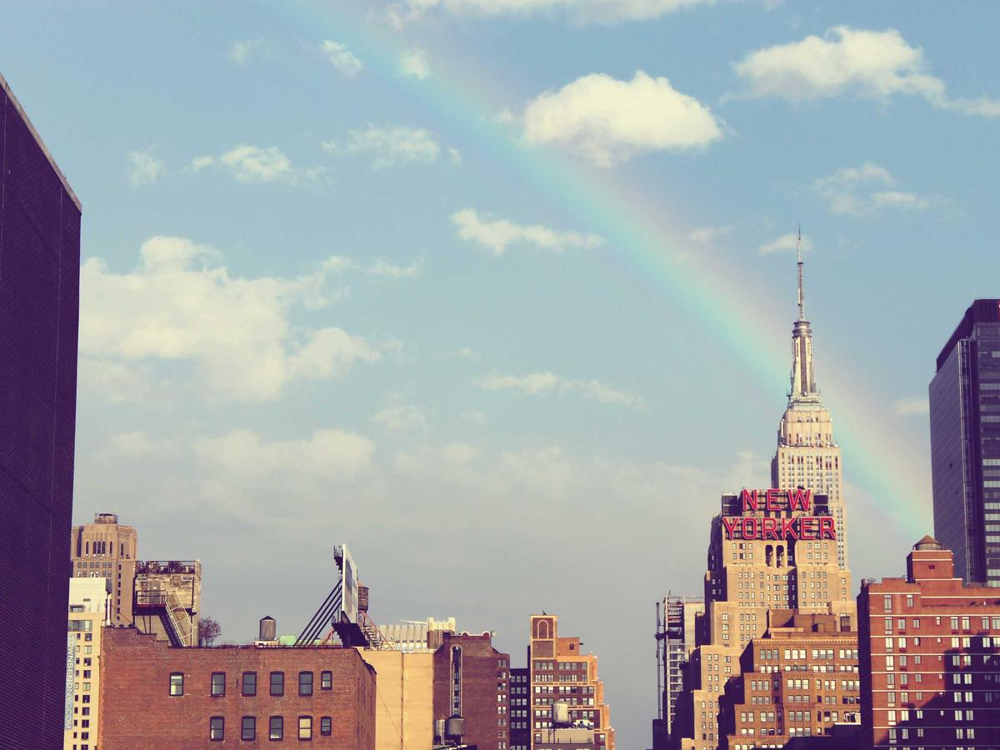

Our story
French method, Japanese restraint
BEBE Rouge has been on Sacred Heart Street for decades, long favoured by the Japanese families around San Antonio and by locals who grew up on the shortcake. The text below is a placeholder history for the demo.

How the cakes are made
Génoise baked the same way every day so the crumb is consistent. Cream whipped to order, not held. Fruit bought that morning and used that day. Sweetness kept low, the Japanese way, so a whole slice does not tire you out.
Nothing is frozen and re-thawed. If a cake is not on the list today, it is because the fruit was not right or it has not been made yet.
The block
Where
7602 Sacred Heart Street corner Metropolitan Avenue, Barangay San Antonio, Makati. A short walk from the Japanese school and the grocery.
Hours
Every day, 8am to 7pm. Mornings for viennoiserie and the milk bread; afternoons for the case.
Reservations
Whole cakes and seasonal cakes by reservation, with a 50% deposit. The rest is walk-in.